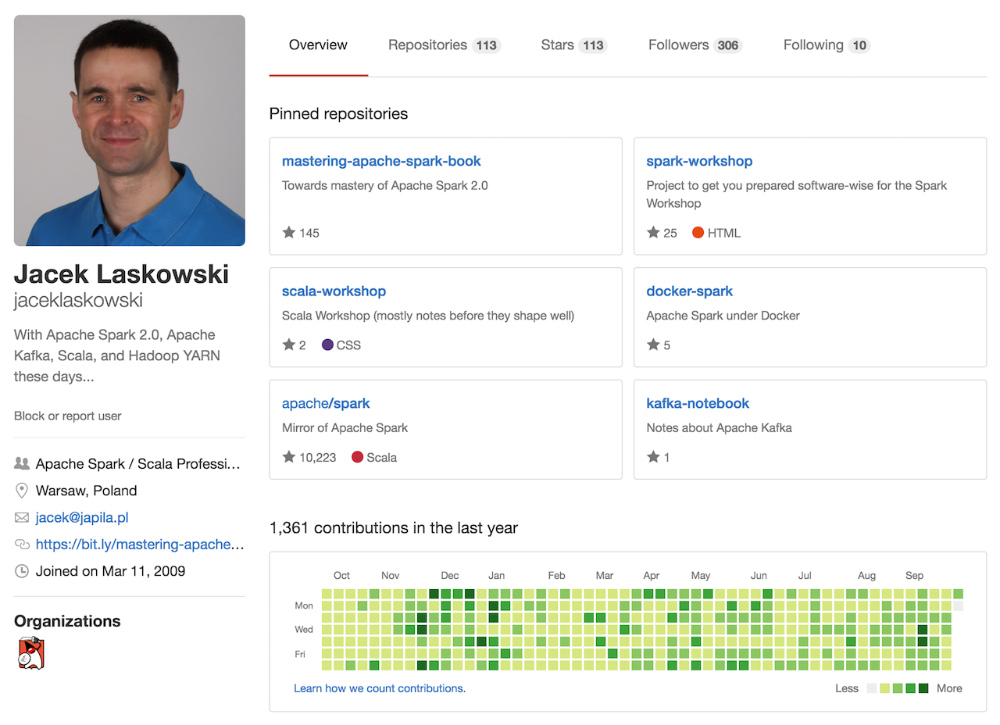

Spark / Scala Workshop exercises
Jacek Laskowski / @jaceklaskowski / GitHub / Mastering Apache Spark Notes

- Jacek Laskowski is an independent consultant
- Contact me at jacek@valueamplify.com or @JacekLaskowski
- Delivering Development Services | Consulting | Training
- Building and leading development teams
- Mostly Apache Spark and Scala these days
- Leader of Warsaw Scala Enthusiasts and Warsaw Apache Spark
- Java Champion
- Blogger at blog.jaceklaskowski.pl and jaceklaskowski.pl
https://github.com/jaceklaskowski

http://bit.ly/mastering-apache-spark

Tools
Scala
Scala
Hello World App
object Main extends App {
println("Hello")
}
object keyword
extends keyword
println method
curly braces
object Main extends App {
println("Hello")
}
IntelliJ IDEA
IntelliJ IDEA
-
The integrated development tool
- similar to Visual Studio
- Support for Scala
- Scala Worksheet for Learning and Prototyping
- "IntelliSense" Feature
-
Lots of Key Shortcuts
- You're going to use them quite often!
- Creating a Scala project
- Running the Hello World application
sbt
sbt
-
Simple (?) Build Tool
- s/Simple/Scala
- Automates project builds
- compile, test, package, run
-
Plugins
- sbt-assembly
ScalaTest
ScalaTest
- Scala Testing Framework
- Matchers - Assertions
-
sbt supports ScalaTest
- sbt test
- IntelliJ IDEA supports ScalaTest, too.
Directory Layout Convention
Convention over Configuration
Directory Layout
- build.sbt - your project's configuration
- src/main/scala - main sources
- src/test/scala - tests
- project - sbt's configuration
Scaladoc
Scala Standard API's Documentation
Scaladoc
- Official Documentation for Scala API
- https://scala-lang.org/api/current
[RDD] WordCount using groupBy
- Use Spark API scaladoc at http://spark.apache.org/docs/latest/api/scala
- Use spark-shell and sbt
- Use
sc.textFile,flatMapandsplit - Use
groupByto group values per key - Use
mapValuesandtop - Print results using
foreachandprintln sbt packageand deploy it to Spark Standalone.
[RDD] WordCount Solution
sc.textFile("README.md")
.flatMap(line => line.split("\\W+"))
.map(token => (token, 1))
.reduceByKey { case (x, y) => x + y }
.top(10)(Ordering.by(wc => wc._2))
.foreach(println)
[RDD] WordCount using reduceByKey
- Use Spark API scaladoc at http://spark.apache.org/docs/latest/api/scala
- Use spark-shell and sbt
- Use
sc.textFile,flatMapandsplit - Use
groupByandreduceByKey - Save results using
saveAsTextFile sbt packageand deploy it to Spark Standalone.
[RDD] WordCount Solution
sc.textFile("README.md")
.flatMap(line => line.split("\\W+"))
.map(token => (token, 1))
.reduceByKey { case (x, y) => x + y }
.saveAsTextFile("results.txt")
[Dataset] Reading CSV files using spark-csv
- Use Spark API scaladoc at http://spark.apache.org/docs/latest/api/scala
- Use spark-shell and sbt
- Use
sqlContext.read,formatandoptionto read a file - Use
withColumnandsplit - Use a custom case class
Record - Print results using
show sbt packageand deploy it to Spark Standalone.
Questions?
- Visit Jacek Laskowski's blog
- Follow @jaceklaskowski at twitter
- Use Jacek's projects at GitHub
- Read Mastering Apache Spark notes.